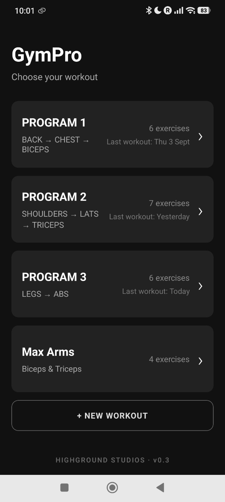
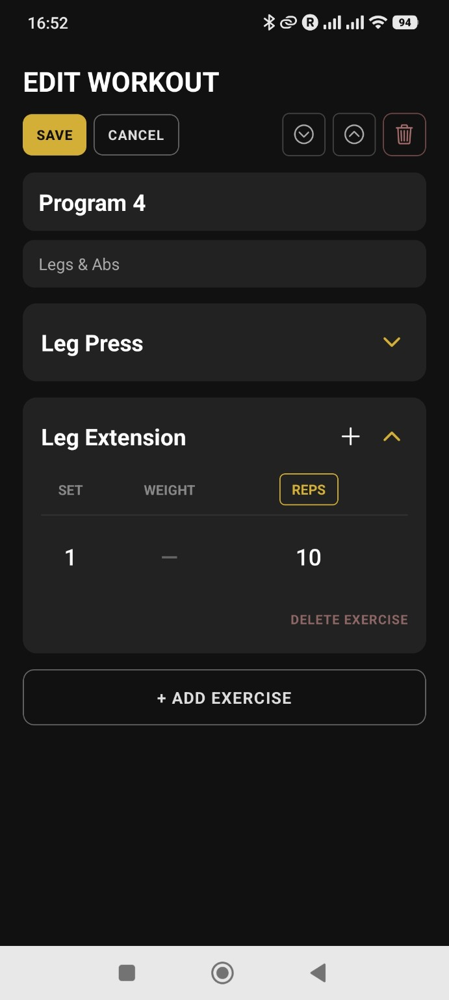
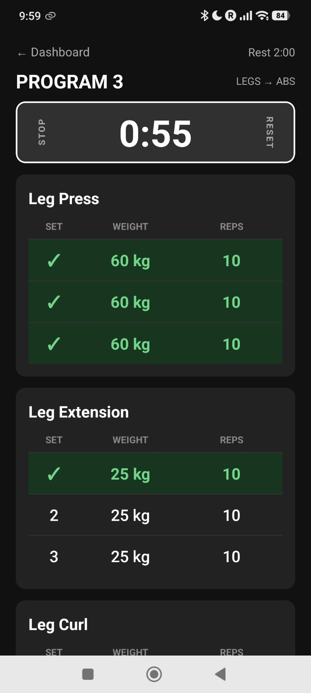
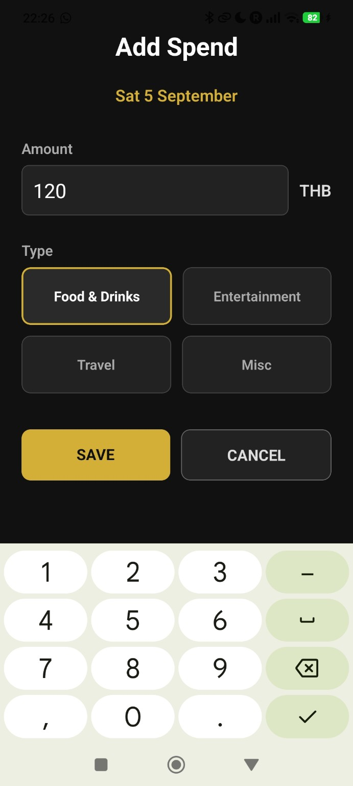
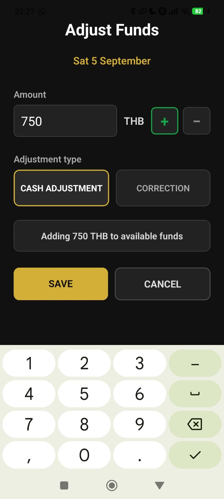
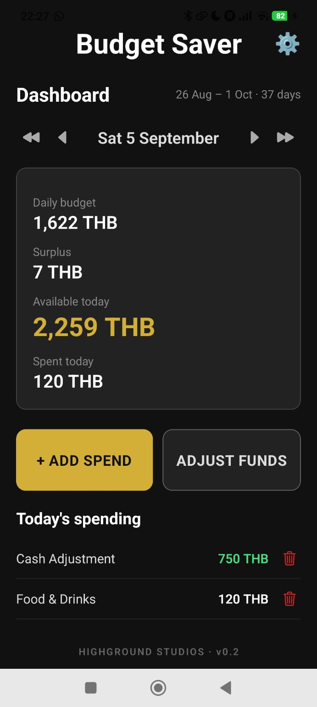
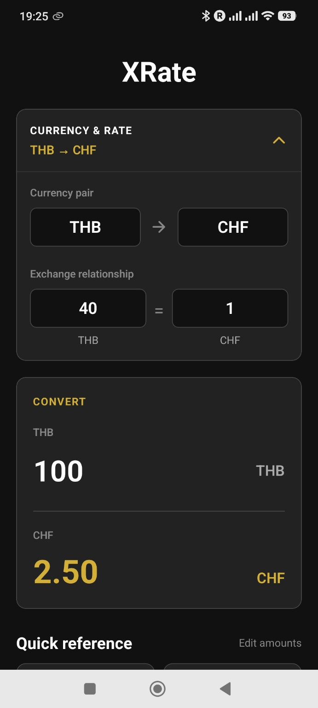
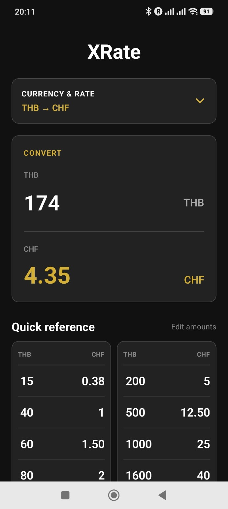

HIGHGROUND STUDIOS
Ideas. Technology. Experiences.
Highground Studios is an independent creative technology studio built around a simple idea: turning interesting ideas into things that actually work.
From useful applications that solve everyday problems to games, interactive experiences and ambitious creative worlds, Highground Studios is a place to experiment, build and create things that are useful, interesting or simply enjoyable.
We're just getting started.
BEHIND HIGHGROUND STUDIOS
Highground Studios is something I've wanted to do for a long time, although it hasn't had a name until now! I've always had a passion for technology, gaming and creating things. I've often found myself looking for improvements or simply better ways of doing things.
Over the years, that's taken me from process improvement and automation through to software, website development, Web3, blockchain and AI. Sometimes it's about making something quicker or simpler or solving a problem. But sometimes it's just about taking an idea that sounds interesting and seeing what I can make of it.
I've always had ideas that I thought seemed amazing at the time but on reflection at least some probably weren't quite as feasible as I first thought! (Let's not talk about edible cutlery...) But there have also been a few I've regretted not taking further. Finding the time to actually explore them has usually been the difficult part.
Highground Studios gives me a place to finally work on that. Somewhere to bring those ideas and interests together, experiment with them and turn the ones that have potential into something real.
Cars, gaming and (amateur) fitness have been part of my life for a long time too, so naturally they find their way into some of what I create. Other ideas come from much simpler places, sometimes just finding something frustrating and thinking I could make it easier.
Ultimately I want to build things that are useful, interesting or enjoyable. If something I create solves a problem for someone, makes their life a little easier, or simply gives them something they enjoy using then it was worth building.
- Michael
WHAT WE'RE WORKING ON
Highground Studios is home to projects of very different shapes and sizes, from ambitious creative worlds to simple applications designed to solve everyday problems.
Here's some of what's currently taking shape.
THE PIT STOP
An evolving automotive and racing universe bringing together car culture, gaming, storytelling and community.
The Pit Stop combines an extensive automotive collection, game systems and a growing cast of distinctive personalities within a creative world built around a shared passion for cars.
IN DEVELOPMENT

MEET THE MECHANIX

Sparkz

Torx

Wheelz

Nutz
At the heart of The Pit Stop are the Mechanix — four pint-sized automotive robots with distinct personalities, abilities and specialities.
Sparkz, Torx, Wheelz and Nutz aren't just mascots. They are part of The Pit Stop world, its stories and its game systems, each bringing their own approach to making cars go faster... or, occasionally, making things considerably more interesting.


VEHICLE COLLECTION & GAME SYSTEMS
Behind The Pit Stop is a collection of 5,555 automotive collectibles, built from a diverse range of vehicles spanning car and racing culture.
From hatchbacks, vans and trucks to muscle cars, sports cars and supercars, individual vehicle designs appear across different editions, with the wider collection structured around vehicle types, eras, rarity levels, performance attributes and special modifiers.
The Mechanix are integrated into the system itself, with Sparkz, Torx, Wheelz and Nutz influencing different vehicle characteristics and creating the foundations for game and interactive concepts.
Collection design. Game mechanics. Interactive concepts.
APPS
Useful by design. Intuitive by choice.
Highground Studios apps start with a simple principle: if an app solves a problem, it shouldn't create three more by being unnecessarily complex.
We make apps that are straightforward, efficient and genuinely useful, without unnecessary complexity getting in the way.
Every free Highground Studios app is genuinely usable and useful in its own right. Premium features are there to add worthwhile quality-of-life improvements, not to unlock the app you should have received in the first place.
And if advertising helps support a free version, we'll keep it simple: one small, unobtrusive ad. No interruptions, no silly pop-ups and nothing getting in the way of actually using the app.
GYMPRO
ANDROID BETA
Designed to be different. Complements your training, rather than getting in the way.
GymPro grew out of my own frustration with workout trackers. The ones I tried were often unintuitive, overloaded with adverts, locked useful features behind premium subscriptions or simply didn't work particularly well. And after all that, I was still switching to a separate stopwatch app to time my rest periods.
So I built something that works the way I want to train. Efficiently.
GymPro is designed around the reality that when you're training, you want to concentrate on your workout, not your phone. The aim is to demand as little interaction and attention as possible, with one-touch actions wherever possible without sacrificing usability.
Tick off a completed set and your predefined rest timer starts automatically. A large, easy-to-read timer and clear, scrollable exercise and (updateable on the fly) set information let you see what you need at a glance, even when you're busy or working hard.
Create and organise your own workouts with drag-and-drop sorting using rep or time based exercises. Number of sets, weight and rep counts completely customiseable for your personal training approach.
Simple progression markers help you keep track of what needs to change next time and a dashboard marker indicates the workout you used most recently.
Android beta. Built and tested on real devices.



Hover over a screen to take a closer look
BUDGET SAVER
WORKING PROTOTYPE
A smarter, simpler way to stay in control of your budget — and make more of what's left.
Budget Saver started with a simple problem: finding a straightforward way to manage a holiday budget without an app that was overly complicated, expensive or buried beneath subscriptions and adverts. Unable to find one that did what I needed, I decided to build one.
Set your budget and Budget Saver works out how much you have available each day, automatically adjusting as you spend or save. Spend less today and the surplus carries forward, giving you more to work with tomorrow.
Spending can be added quickly using simple categories, while fund adjustments let you account for changes to the money you actually have available without distorting your day-to-day spending.
Working prototype. Built and tested on Android.



Hover over a screen to take a closer look
XRATE
ANDROID BETA
A (really!) simple currency converter for everyday use.
XRate grew out of a familiar problem when travelling: you know roughly what the exchange rate is, but you still find yourself doing the same mental calculations over and over. How much is that meal? What does this beer cost back home? How much have I actually spent today?
This converter makes those small and frequent calculations quick and easy.
Enter your own exchange rate and XRate converts amounts instantly, without needing an internet connection or fetching live rates. The rate is displayed as a clear relationship between the two currencies, so you can enter it in the way that makes sense to you—for example, 40 THB = 1 CHF (not necessarily the exact exchange rate, but close enough for a useful everyday guide).
Alongside the main converter, you can create your own quick-reference amounts for the values you use most often. Whether that’s a bus fare, a drink, a meal or your daily budget, you can see the conversions at a glance without entering the same numbers repeatedly. Your currencies, rate and reference amounts are saved for next time.
No accounts, no unnecessary complexity. Just a practical little tool that does what you need, when you need it.
Potential future plans include a home-screen widget, multiple currency pairs and perhaps even live exchange rates. But most importantly, we’ll keep XRate simple and easy to use.
Android beta. Built and tested on real devices.


Hover over a screen to take a closer look
OUR BRAND NEW CLOTHING LINE
We've also been having some fun with the Highground Studios brand, creating a few T-shirts, vest tops and other bits and pieces.
In all honesty, they won't be appearing in a store near you anytime soon. They're just for founders, friends and family.
Even so, we still think they're pretty awesome. 😎
WHAT'S NEXT?
There's plenty more planned for Highground Studios. The Pit Stop universe will continue to grow, while several new application ideas are already being explored and developed.
The existing apps will continue to evolve too, with new features and functionality planned as we work towards their first full releases.
There are plenty more ideas waiting their turn too. Some will work. Some probably won't. That's part of the fun.
Watch this space.